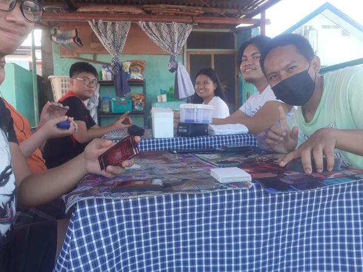
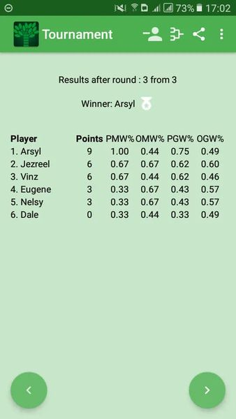

Lancers HQ 
Home | Products |
Community
Casual Tournament
At Lancers HQ, we believe that dueling should be fun and accessible for
everyone. That's why we host Casual Tournaments designed to bring together
duelists of all skill levels in a relaxed, friendly environment.
These tournaments are perfect for players who want to enjoy the thrill of
competition without the pressure of high-stakes matches. Whether you're
testing out a new deck, experimenting with strategies, or just looking to
meet other Yu-Gi-Oh! fans, our casual tournaments offer the ideal setting.
Lancers Casual Tournament
Winners
- Arsyl Peter Rosas (Cyber Dragon)
- Jezreel Gabayan (Unchained)
- Sol Vincent Nacario (Code Talker)


Lancers HQ
Thank you for checking out Lancers HQ!
Address
Main Headquarters: Near the University of Cebu
Contacts
Email: support@lancers_ygo.com
Phone: +63-985-456-2678
Follow Us
Facebook |
Instagram |
X
Join our Community:
Sign up for our newsletter to stay updated on the latest
products, tournaments, and community events.
Lancers is a fan-driven Yu-Gi-Oh! store and community. We are not
officially affiliated with Konami Digital Entertainment.